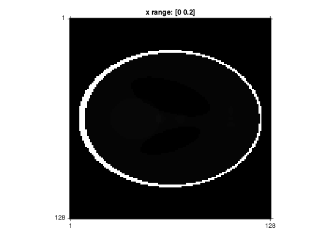
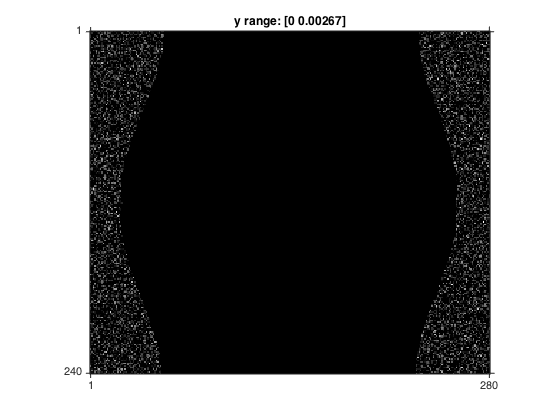
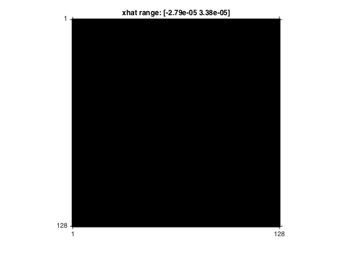
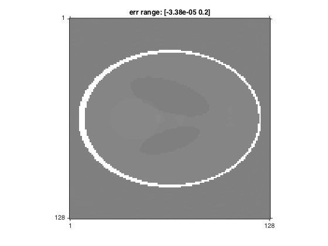

Contents
Parallel Beam Reconstruction Example
Generate phantom, generic geometries, and produce a noiseless projection. Perform simple iterative reconstruction.
close all;
Phantom
x = phantom(128,'Shepp-Logan')/5;
Geometries
Image and sinogram geometries
% Image geometry nx = 128; ny = 128; dx = 1; dy = 1; offset_x = -.5; offset_y = -.5; mask = true(nx,ny); ig = image_geom('nx',nx,'ny',ny, ... 'dx',dx,'dy',dy, ... 'offset_x',offset_x,'offset_y',offset_y, ... 'mask',mask); % Sinogram geometry type = 'par'; orbit_start = 90; orbit = 180; nb = 280; % number of bins na = 240; % number of angles dr = .5; % ray spacing %offset_r = -.5; % channel offset offset_r = 0; % channel offset strip_width = dr; % strip width sgr = sino_geom(type,... 'orbit_start',orbit_start,'orbit',orbit, ... 'nb',nb,'na',na,'dr',dr, ... 'offset_r',0,'strip_width',strip_width);
Generate sinogram
table = {'square/strip','Ltab',[1000],'strip_width',[dr]}; % strip integral
nthread = jf('ncore'); % number of threads in my computer
G = Gtomo2_table(sgr,ig,table,'nthread',nthread);
p = G*x;
Finish forward model
r = 0;
b = 2000000;
z = b*exp(-p)+r;
w = z + sqrt(z).*randn(size(z)); % Simulate poisson
Convert
y = log((w-r)/b); y(y<0) = 0;
Display phantom and sinogram
figure; im(x,[0 .2]); figure; im(y); 
Initialize
o = ones(128); o2 = G'*(G*o); m = mean(o2(:)); x0 = (1/m)*G'*y;
Iterative reconstruction with SD
%alpha = 6e-5; N = 50; xhat = x0; for k = 1:N r = y-G*xhat; gr = G'*r; alpha = (r(:)'*r(:))/(gr(:)'*gr(:)); xhat = xhat + alpha*gr; end err = x - xhat; % Display recon and error %figure; im(xhat); figure; im(xhat,[0 .2]); figure; im(err,[-.1 .1]); 